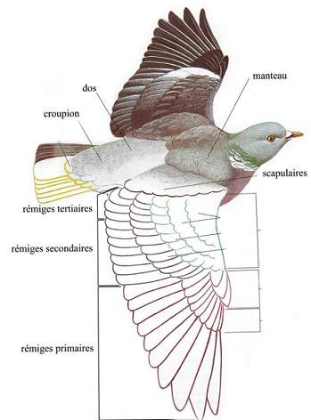

Quelle contrainte ?
Le vol d’un aéronef plus lourd que l’air est tout d’abord limité par son poids, calculé grâce au produit de la masse de l’objet (m) et de l’intensité de pesanteur locale (g):
P = m × g

Représentation simplifiée du poids
Ce poids empêche tout objet, engin ou animal, de se maintenir immobile dans l’air. Il est donc nécessaire d’y opposer une autre force: la portance. Le décollage d’un aéronef ou d’un animal
correspond alors à la compensation des forces qui le maintiennent au sol. Afin de comprendre comment optimiser notre aéronef pour qu’il puisse décoller et rester en l’air par la suite, il
nous est alors possible d’étudier les exemples que nous pouvons voir autour de nous, c’est-à-dire le vol des êtres vivants.
En effet, l’aile d’une chauve-souris est une membrane alaire, composée de bandes élastiques disposées selon une seule direction. La membrane est divisée entre le propatagium, situé entre le bras et l’avant bras, le patagium, située entre les longs doigts de la chauve-souris et la ligne latérale du corps et l’uropatagium, qui relie les pattes arrières et la queue. C’est le patagium, la plus grande partie de la membrane, qui assure le rôle du gain de vitesse et de portance. Pour obtenir cette dernière, les chauve-souris utilisent le vol battu. Grâce au mouvement de haut en bas de leurs ailes, ils chassent l’air en bas d’eux, créant une dépression sur le haut de leur corps, et une pression plus grande sur le bas de leur corps. L’air presse donc plus le bas que le haut de la chauve-souris: elle gagne de l’altitude.
Photo de la membrane d'une chauve-souris

Schéma de la membrane d'une chauve-souris
De plus, l’aile est pourvue de fibres musculaires et nerveuses ainsi que de vaisseaux sanguins. La membrane est donc mobile. Cela permet à la chauve-souris de gagner en vitesse, et de tordre ou de replier la membrane, ce qui diminue l’effet du vol battu lors d’un battement vers le haut qui compenserait le battement vers le bas. Ce mécanisme est toutefois impossible à reproduire pour l’avion ou le planeur, car le coton ou n’importe quel autre matériau ne peut pas se tordre ainsi sans se détériorer très rapidement, et au prix de mécanismes complexes et donc lourds.
De quoi donc s'inspirer ?
Il faut alors se rabattre sur l’étude des oiseaux. Ils peuvent en effet orienter individuellement leurs plumes pour laisser passer l’air lors d’un battement vers le haut et n’ont donc pas besoin de tordre leur aile. De plus, ils maîtrisent, avec le vol battu, le vol plané, qui utilise seulement quelques battements d’aile afin de conserver leur vitesse, et utilisent cette dernière pour conserver une portance suffisante. Toutefois, certains oiseaux n’utilisent pas cette technique, qui est apparu après le vol battu, et qui est donc une innovation évolutive que l’on peut identifier. En effet, les oiseaux utilisant majoritairement ce vol ont des ailes avec une forte cambrure, et avec une surface portante maximale et un poids minimal, soit une charge alaire minimale. De plus, leurs ailes forment avec le flux d’air un angle appelé angle d’incidence qui varie en fonction des situations et participe aussi à la portance. Enfin, on observe que ces oiseaux décollent généralement face au vent, après avoir pris un grand élan comme l’albatros qui court longtemps avant de décoller, ou la mouette qui attend un vent fort.
Photographie d'un des monoplans de Lilienthal
Otto Lilienthal, pendant les années 1890, mit donc à profit ses études afin de concevoir de multiples modèles de planeurs le transportant qui reproduisaient exactement le vol plané des oiseaux, et utilisaient la majorité de ses techniques. Néanmoins, les ailes de ces planeurs étaient fixes. Ils perdaient donc de la vitesse progressivement, et avec elle de l’altitude, jusqu’à l’arrêt et l'atterrissage de l’appareil. C’est le modèle de nos planeurs actuels.
Il essaya par la suite, le 9 août 1896, le vol d’un biplan afin de doubler la surface alaire de l’appareil et donc d’augmenter la portance. Ce planeur réalise tout d’abord plusieurs vols de 250 mètres, mais l’appareil chute lors du quatrième vol, et tombe de quinze mètres.
Photographie du biplan de Lilienthal
Des sacrifices doivent être faits
Otto Lilienthal, 1896
Il mourut des suites de ses blessures peu après cette déclaration.
Que peut-on en déduire ?
L’observation des oiseaux ainsi que des mesures et calculs effectués en soufflerie permettent donc à cette époque de fixer les bases d’un nouveau domaine d'ingénierie: l’aérodynamique.
On cherche alors à contrer le poids d’un objet afin de le maintenir en l’air. On détermine alors la portance, car cette force s’oppose au poids. La portance se calcule par rapport à un fluide, ici l’air, en calculant le produit de la moitié de la masse volumique de l’air (ρ), de la vitesse par rapport à l’air (v) au carré et de la surface portante (S), le tout multiplié par le coefficient de la portance (Cz):
Fz = Cz × ½ρ × v² × S

Représentation simplifiée du poids et de la portance
Afin que l’objet décolle, il faut donc avoir une grande surface portante, et voler à des altitudes d’abord peu élevées, où la masse volumique de l’air est importante. De plus, il est nécessaire d’augmenter la vitesse de la surface portante par rapport à l’air, ainsi que le coefficient de portance, qui varie en fonction du profil de l’aile car il dépend de la courbure de l’aile et de son angle d’incidence.
Cet angle d’incidence est l’angle entre la corde de la surface portante et la direction du flux d’air traversé.

Schéma de l'angle d'incidence d'une aile d'avion
Variation du coefficient de portance en fonction de l'angle d'incidence
On remarque que ce coefficient de portance peut être optimisé, lorsque l’angle d’incidence atteint une valeur précise (ici 16°). De plus, au delà d’un certain angle (25°), l’incidence est trop grande, l’air se décolle de l’extrados, la partie supérieure de l’aile, la portance devient nulle : c’est le décrochage. En dessous d’un autre angle (-5°), la surface alaire ne permet plus de portance positive : l’appareil perd de l’altitude.
En effet, un angle d’incidence positif permet, lorsque la surface portante avance par rapport à l’air, de créer un surplus de pression sur la partie inférieure de l’aile, la poussant ainsi vers le haut et augmentant donc la portance.
Le mécanisme de la cambrure de l’aile est plus complexe, et se base sur l’augmentation de la distance à parcourir de l’air sur la partie supérieure de l’aile, par rapport à sa partie inférieure. Pendant un premier état transitoire, le flux d’air supérieur garde la même vitesse que le flux d’air inférieur, mais a une plus grande distance à parcourir, ce qui crée une dépression sur la partie l’arrière de l’aile, provoquant l’accélération du flux d’air, ce qui conduit à l’uniformisation du flux d’air, qui gardera une vitesse plus importante.

Comportement simplifié de l'air autour de l'aile d'un avion
D’après le théorème de Bernoulli, la vitesse d’un fluide (v) au carré divisé par deux plus le produit de l’accélération de pesanteur (g) et de l’altitude (z) plus la pression du fluide (p) divisé par sa masse volumique (ρ) est constante:
v²/2 + g × z + p/ρ = constante
Or, pour un moment et un point donné du vol, l’altitude, l’accélération de pesanteur ainsi que la masse volumique de l’air étant constantes, le théorème de Bernoulli nous permet de dire que si la vitesse du flux d’air augmente, la pression qu’il exerce, ici sur la partie supérieure de l’aile, diminue. On assiste alors à un écart de pression sur le bas et le haut de l’aile, la pression sur la surface inférieure étant supérieure à la pression sur la surface inférieure: l’objet monte.
Pression de l'air sur l'aile d'un avion
Le profil de l’aile crée donc une portance qui permettent à l’avion comme à l’oiseau de se maintenir en l’air, mais l’aile provoque aussi des frottements ralentissant l’objet.
Quels problèmes reste-t-il ?
Une des données les plus importantes du vol d’un avion est sa vitesse. Elle lui permet tout d’abord de se déplacer, mais est aussi nécessaire à la portance. Otto Lilienthal, pour cela, prenait son élan avant de planer face au vent, comme de nombreux oiseaux.
Toutefois, cette vitesse crée des frottements sur la surface de l’avion qui le freinent: c’est la traînée, dont la formule est semblable à celle de la portance:
Fx = Cx × ½ρ × v2 × S

Représentation simplifiée du poids, de la portance, de la traînée et de la poussée
Seul le coefficient de traînée (Cx) diffère. Ce coefficient dépend du profil de l’avion ainsi que de l’angle d’incidence. Cette trainée ralentit le planneur d’Otto Lilienthal, qui finit par atterrir. Pour empêcher cela, il est alors nécessaire d’opposer une poussée à la traînée. Cette poussée est l’ensemble des forces faisant avancer l’objet par rapport à l’air.
Retour aux oiseaux ?
On peut alors, encore une fois, tenter de s’inspirer du vol des oiseaux afin de générer cette force. En effet, les battements des ailes des oiseaux leur permettent d’assurer la portance comme la poussée grâce à différents types de plumes. Parmi elles, les rémiges primaires, longues et étroites, fixées sur les phalanges, peuvent être individuellement orientées grâce à plusieurs muscles et assurent la poussée, tandis que les rémiges secondaires, plus petites et plus souples, assurent la portance.

Schéma des différents types de rémiges
Dans un premier temps, les oiseaux descendent l'intégralité de l’aile grâce au muscle pectoral, avant d’y ajouter une action de pivot de l’aile, appelé coup de rame, qui crée un mouvement de l’avant vers l’arrière. Le tout produit une surpression en bas et à l’arrière de l’aile, et une sous-pression en haut et à l’avant de l’aile.
Schéma des muscles de l'aile d'un oiseau

Photo du carpe d'un oiseau
Une fois ce mouvement terminé, l’oiseau remonte son aile dans sa position initiale grâce au muscle supra-coracoïdien. Afin que ce mouvement provoque une traînée minimale et donc ait le moins d’impact possible sur sa vitesse et sa portance, il effectue une légère flexion au niveau du carpe, à l’aide de muscles fléchisseurs, et replace ses plumes dans le sens du flux d’air, grâce à ses muscles et à la souplesse de ses plumes.
De Léonard de Vinci à Otto Lilienthal, l’Homme a alors tenté de concevoir de nombreux ornithoptères qui reproduisent le vol battu des oiseaux. Cependant, certains détails non négligeables n’ont pas pu être pris en compte par les ingénieurs : les toiles utilisées ne pouvaient que grossièrement imiter les plumes de l’oiseau. De plus, les différentes articulations ne suffisaient pas à recréer la complexité de son squelette. Les moyens techniques permettant de reproduire le fonctionnement d’un muscle étaient inefficaces, et les muscles humains eux-mêmes ne sont pas capables de déplacer l’étendue d’une aile, ne serait-ce que pour quelques battements. Ainsi, tous les prototypes d’ornithoptères ont abouti à des échecs. Il fallut alors se tourner vers une autre solution afin de produire une poussée suffisante au décollage des aéronefs.
Les insectes pourraient-ils nous aider ?
En observant cette fois les insectes, on peut voir une nouvelle façon de gagner de la portance et de la poussée qui pourrait être utilisé sur un aéronef. En effet, ces insectes possèdent des ailes bien trop petites par rapport à leurs poids. Ils ne sont donc pas capables de voler à la manière des oiseaux.

Schéma des nervures de l'aile d'un insecte
L’aile d’un insecte est un organe qui peut s’apparenter à une membrane. Elle n’est pas articulée, mais est toutefois mobile grâce à l’action des muscles du thorax. Elle est composée de deux couches circulaires assemblées par des nervures, le reste étant comblé par des cellules. Ces nervures sont des structures creuses. Les plus grosses peuvent contenir des nerfs, des trachées, et de l'hémolymphe, mais les plus petites sont principalement formées de chitine, un glucide rigidifiant ces nervures, qui peuvent donc être plus ou moins souples en fonction de leur nombre et de leur taille. Cette souplesse permet aux ailes de conserver une forme courbée qui se rapproche des ailes des oiseaux en vol plané, et qui permet ici une faible portance.
Toutefois, les insectes pratiquent surtout un vol battu très simple, qui leur fournit toutefois portance et poussée grâce au très grand angle d’incidence des ailes, qui crée cependant un continuel décrochage. De plus, la très petite surface des ailes diminue, avec la traînée, la portance. Ces deux problèmes sont compensés par une très grande fréquence de battement et, généralement, par deux paires d’ailes, ce qui double la portance, à moins que la seconde paire soit remplacée par des balanciers, chez les diptères comme le moustique ou la mouche, ou par des élytres qui protègent les ailes chez les coléoptères comme le scarabée.
Photo d'une libellule, ayant 4 ailes

Photo d'une mouche, ayant des balaciers

Photo d'un scarabée, ayant des élytres
Chez ces espèces, ce manque de portance est encore équilibré par une plus grande vitesse de battement, rendue possible par des muscles de vol asynchrone, permettant d’actionner plusieurs fois les muscles pour une seule impulsion nerveuse.
La mouche atteint ainsi jusqu’à 22 battements par seconde
Mais surtout, les insectes changent l’axe de leurs ailes à chaque battement vers le haut ou vers le bas, afin d’utiliser le vortex créé par le bord d’attaque de l’aile lors du battement précédent, ou lors du battement de l’aile antérieure. Cela crée finalement plus de portance et de poussée et permet enfin à l’insecte de voler.

Technique de vol des insectes
Même si ce mécanisme n’est pas directement reproduisible par les machines à cause du trop gros nombre de battements, il peut être rapproché au fonctionnement de l’hélice du XXème siècle à nos jours. Pour la première fois, l’inventivité de l’homme entre en jeu, et réutilise les principes du vol des êtres vivants afin de concevoir une innovation plus adaptée au vol de la machine: l’hélice.
En quoi l'hélice se rapproche-t-elle des insectes ?
Le but d’une hélice est de créer une poussée vers l’avant. Son principe repose sur la rotation de plusieurs ailes d’avion qui auraient pivoté de 90°. En effet, le profil d’une des pales d’une hélice est très proche d’un profil d’aile standard. Cette fois, la vitesse par rapport à l’air n’est pas fournie par un déplacement de la surface portante dans une direction donnée, mais par la rotation autour d’un axe : c’est le couple moteur. Le pas d’une hélice est la distance que cette dernière parcourt dans la direction de l’axe de rotation en un tour. Cependant, on discerne le pas effectif du pas géométrique. Le pas effectif étant la distance réellement parcourue, alors que le pas géométrique correspond à un simple résultat de calcul. Cette différence est visible lorsque l’avion est à l'arrêt, avec un couple moteur bien réel. L’hélice contient 2 à 8 pales. Plus le nombre de pale est important, plus la poussée sera grande, mais plus il faudra fournir de puissance moteur.

Photo d'un avion ayant 3 pales
Photo d'un avion ayant 8 pales
L’hélice est donc comparable à une aile d’insecte, inarticulée et avec une petite surface, qui augmente son nombre de rotations par seconde et son nombre de pales pour bénéficier d’une plus grande poussée.
On appelle angle de calage l’angle entre la corde de la pale et le plan de rotation de l’hélice. On peut ensuite revenir au principe de l’aile standard. Pour un point de la pale, l’angle d’incidence est alors relatif au mouvement de ce point par rapport à l’air, tout au long d’un tour. Ce mouvement est égal à la somme de la vitesse de l’avion et de la vitesse tangentielle du point étudié, qui vaut le périmètre du cercle dessiné par le point étudié fois la vitesse de rotation de l’hélice en tours par seconde. La différence entre l’angle de calage et l’angle d’avancement de ce point lors de ce mouvement correspond finalement à l’angle d’incidence à ce point de la pale.
Afin d’optimiser une pale, il faut que son efficacité soit maximale sur toute sa longueur. Or, l’angle d’incidence augmente lorsque la vitesse de rotation augmente. Afin de garder un angle d’incidence constant et proche de l’efficacité maximale, il est donc nécessaire de diminuer l’angle de calage lorsque l’on s’éloigne du centre de l’hélice.

L'angle de calage d'une hélice varie en fonction de la distance au centre
En revenant donc à une aile standard, on peut affirmer que la pale crée une portance qui peut être décomposé en deux forces, représentées par deux vecteurs perpendiculaires, la direction de la première étant l’axe de rotation de l’hélice. La seconde force crée alors un couple résistant. Si l’angle d’incidence des pales est positif, la portance sera positive, et l’avion accélèrera alors, tandis qu’il faudra augmenter le couple moteur pour équilibrer le couple résistant qui ralentirait l’hélice: c’est le fonctionnement propulseur. Dans le cas inverse, l’avion décélèrerait, mais l’hélice serait entraîné par le couple résistant: c’est le fonctionnement moulinet, qui permet de démarrer des moteurs en vol.
Lorsque la vitesse de l’avion augmente, si la vitesse de rotation de l’hélice reste la même, l’angle d’avancement augmente, jusqu’à dépasser la corde de la pale. L’incidence est négative, et l’hélice porte extrêmement peu, voire pas du tout. Dans ce cas, seules les forces de frottement sont présentes. Afin d’éviter cela, on doit augmenter à nouveau l’angle d’incidence des pales. On peut alors soit diminuer l’angle d’avancement en augmentant la vitesse de rotation de l’hélice, soit augmenter l’angle de calage. Ainsi, plus un avion est destiné à voler vite, plus d’angle de calage est grand, étant donné que la puissance des moteurs et la solidité de certaines pièces ne sont pas infinies.
Cette nouvelle innovation fut utilisée avec succès par les frères Wright en 1905, fournissant suffisamment de poussée pour assurer durablement la portance et le déplacement d’un avion. Ils furent ainsi les premiers à réaliser des vols stables et contrôlés.